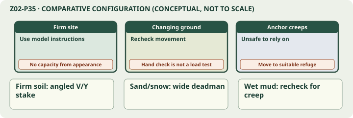

Z02-P35 · Shelter and housing · New manuscript
Match stakes and anchors to soil, sand, mud and compacted snow limits
Recognize how substrate type changes anchor holding behavior without assuming unvalidated pullout capacities.
When it applies · Anchoring manufactured tents and tarps on forest soil, rocky pads, wet mud, sand or consolidated snow.
Equipment · Stakes matched to expected ground (Y/V-profile stakes, wider sand/snow stakes or clean deadman/rock options where lawful).

Actions
- Check substrate firmness before pitching; slim wire pegs pull straight out of soft mud, loose sand, thick leaf duff and dry snow under modest wind gusts.[E16, E20, ED]
- Use shelter-maker instructions for anchor type, placement and orientation. Saturated, soft or changing ground requires a different site when anchors cannot be secured. Follow site rules for any disturbance.[E20, E21, ED]
- Inspect for movement after setup and weather changes. A gentle hand check can reveal a loose stake but cannot establish capacity in gusts.[E16, E20, ED]
Failure recognition · Expecting standard aluminum wire pegs pushed into wet forest duff or melting spring snow to hold a tarp through a night squall.[E16, E20]
Verify · Confirm every primary corner and windward guyline sits in firm substrate and resists steady hand tension without creeping.[E16, E20, ED]
Stop or change course · Anchor strength varies wildly with soil moisture and snow crystal state—no universal pullout rating is implied; relocate to protected refuge if anchors creep in rising wind.[E16, E05, ED]
Evidence and editorial notes
- E05 · NWS · What To Do If You're Caught in a Winter Storm (current web edition)
- Section: Outside and find shelter · Conditions: Cold, wet or windy winter conditions
Support: Block wind, stay dry and keep off cold ground. Keep exposure reduction separate from making a fire.
Limitations: Improvised windbreaks do not provide rated thermal protection or snow-load capacity. · Conflicting evidence: None; aligns with CDC-H.
Editorial note: Separates wind, ground, and moisture heat-loss pathways. · Specialist reviewer: Cold-weather shelter specialist
Primary source · checked 2026-11-24 - E16 · NWS · Wind Safety (current web edition)
- Section: Wind Safety > High Wind Hazards · Conditions: Forecast or developing high winds, squalls, or straight-line winds
Support: High winds topple trees, loft debris, and stress lightweight shelters beyond fabric and anchor limits; relocate out of timbered fall zones and into substantial shelter before gusts peak.
Limitations: Tents and tarps lack standardized wind-speed survival guarantees across soil types and pitch angles. · Conflicting evidence: None; avoids unvalidated mph ratings for improvised pitches.
Editorial note: Drives high-wind shelter inspection, guying limits, and abandonment thresholds. · Specialist reviewer: Weather safety and shelter equipment
Primary source · checked 2026-11-24 - E20 · NPS · Camping: What to Bring (current web edition)
- Section: Camping: What to Bring > Shelter and Sleep System · Conditions: Overnight camping across three-season and cool conditions
Support: Match tent/tarp, groundsheet, sleeping pad, and sleeping bag ratings to expected night lows and precipitation; test pitching and inspect poles, zippers, and stakes before departure.
Limitations: Manufacturer comfort ratings assume dry insulation, ground pad use, and adequate caloric intake. · Conflicting evidence: None; reinforces pre-trip inspection and dry-sleep separation.
Editorial note: Anchors manufactured shelter selection, groundsheet fit, and gear readiness. · Specialist reviewer: Shelter equipment and field education
Primary source · checked 2026-11-24 - E21 · USDA Forest Service · Know Before You Go: Camping (current web edition)
- Section: Know Before You Go: Camping > Site Selection and Safety · Conditions: Dispersed and developed National Forest camping
Support: Verify site legality, distance from water, wildlife food-storage rules, and weather exposure; leave fragile vegetation undisturbed and avoid digging drainage trenches where prohibited.
Limitations: Dispersed camping rules vary sharply by forest and wilderness designation. · Conflicting evidence: Prohibits legacy trenching practices that damage soils and still fail in heavy runoff.
Editorial note: Replaces obsolete ditch-digging advice with slope/drainage site selection. · Specialist reviewer: Land management and wilderness shelter
Primary source · checked 2026-11-24
Source lineage · NPS camping and NWS wind safety; new manuscript · Classification · New manuscript.